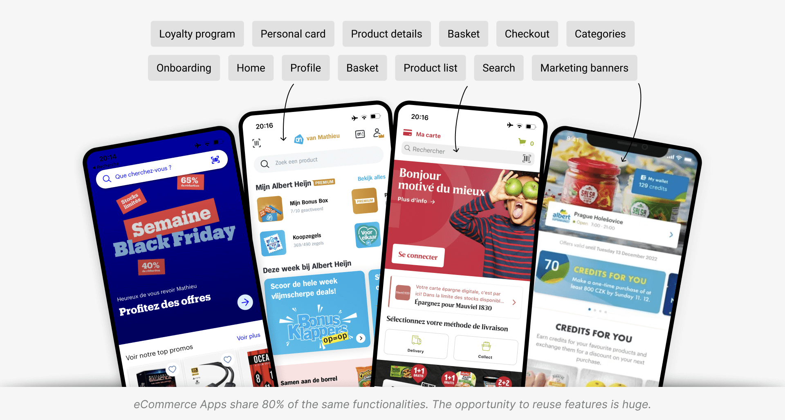
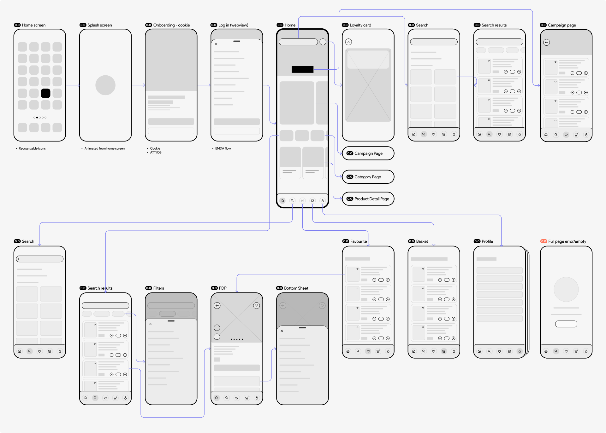
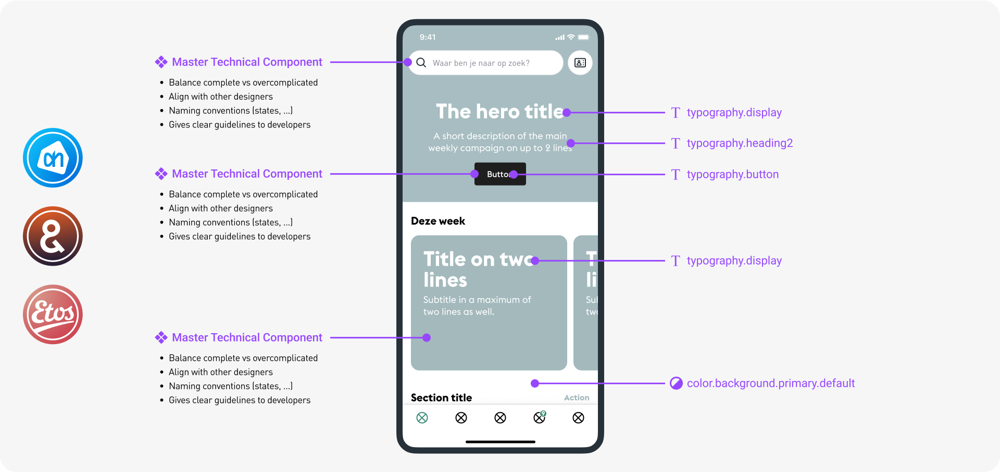
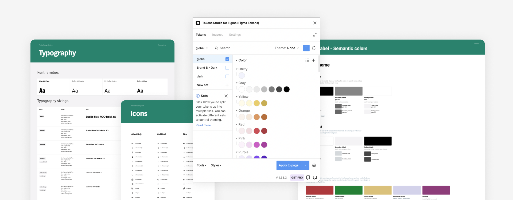
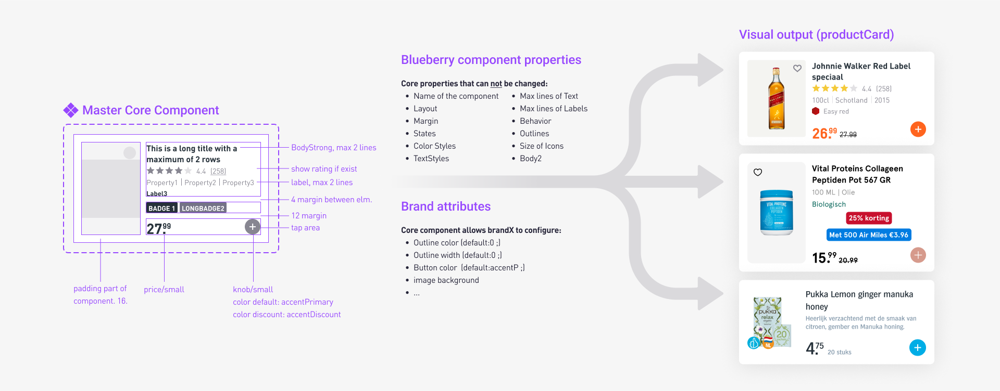
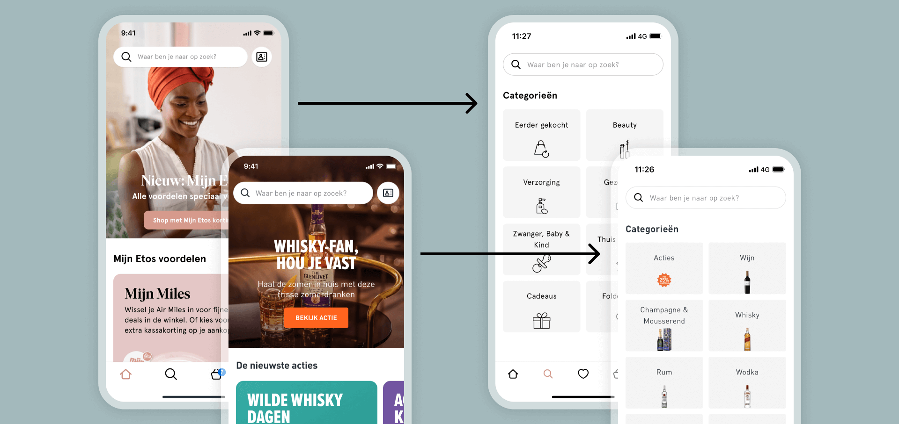
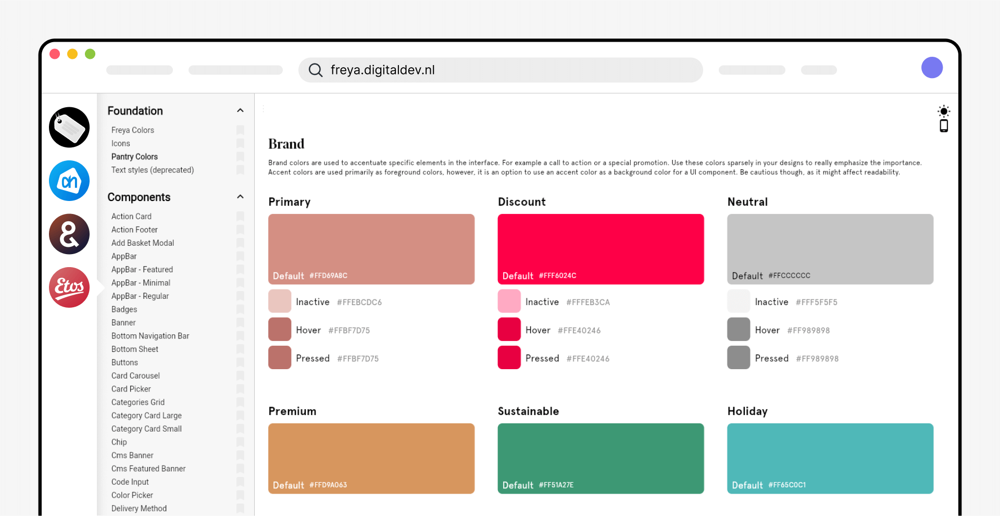
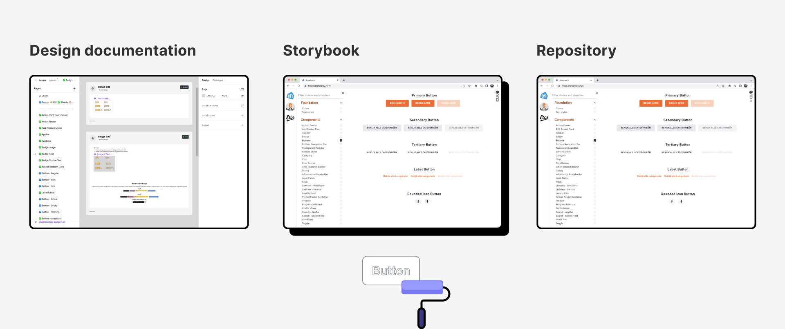
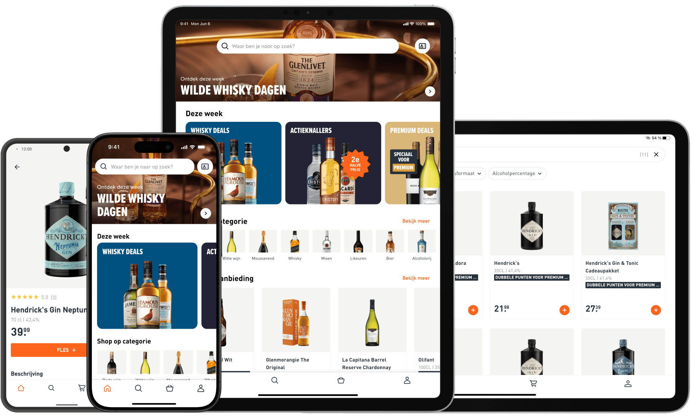

Building a white label app for a
multinational retail company.
July 2022 - Dec. 2023
AH, Gall & Gall, Etos
Figma, Token Studio, Jira, Github
In 2022, the multinational retail company Ahold Delhaize increased the collaboration between its dutch brands to take a leap in its omnichannel strategy. By building a strong White Label eCom platform, brands can reach more customers while reducing their cost & development efforts.
Overview
In the competitive retail industry, eCommerce apps share 80% of the same functionalitie, and offering a
personalized experience boosts customer loyalty. The opportunity to share, test and learn from other features
is huge!
In one year, our team launched two apps, and introduced multiple features. As the principal designer working
with
12 developers, I oversaw the implementation to ensure a consistent and unified user experience across all
apps.
In numbers
components
Fully documented & aligned with devs.
succesfully launched
From intake to growth within 1 year.
App customers
Within a year for Gall and Etos combined.
extra revenue
For the 2 brands, 6 months after release.
Context — What is a White Label product?
White labeling is the process of rebranding a single product for multiple companies to sell as their own. This way, each company can focus on its business and marketing efforts without being concerned by the technical aspect.
To make it work efficiently, a White Label product needs a design system to ensure consistency and avoid redundancy across various pages and channels in a standardized approach.
Instead of manually changing the same element in multiple files a design system allows for automatic updates throughout the application by just changing a single instance. To have a white-label design system makes it flexible, brandable, accessible, and scalable.
Discovery — Setting up the project's playground
Benchmarking other eCommerce apps helped us identify user needs, discuss business requirements, and prioritize tasks to kickstart the project effectively. We also gathered resources to gain further insights into various aspects of a white-label system.
Challenges
#1 Silos between brands and departments
Our approach: Introduce a systemic way of working, assign roles, meet every week
#2 Maintain design quality and development pace
Our approach: Document as many decisions as possible to keep track of the improvements
#3 Balancing user research and quick decisions
Our approach: Set up a research roadmap, and plan activities for every new feature
Early sketches — The backbones of the Apps
Simple wireframes guided our direction. With a rough project roadmap, we started on user stories while development set up the platform.
Theming framework — Build to scale up
The system is based on design tokens to function. Let me explain.
"Design tokens" represent the small, repeated design decisions that
make up a design system's visual style. Tokens replace static
values, such as hex codes for color, with self-explanatory names.
Tokenising the UI allowed us to standardize our components and speak the same language between designers and developers. Defining and documenting these tokens/rules together was key to ensure efficiency and consistency.
➀ Solid foundations
To make our system scalable, we had to design and code strong foundations. These would serve as a framework to build more complex components.
➁ 'Headless' components
We've designed unstyled components, ready to be themed through tokens, starting with the smallest (buttons, labels, lists, ...) up to the more complex ones (product cards, banners, menus, ...). All components were documented, from anatomy, usage, variants, states, motion, properties and accessibility.
➂ Workflows / Features
Focusing on core functionalities from a White Label perspective, we avoided brand-specific distractions. This increased our speed, consistency, and clarity in communicating stories to the development team.
Documentation — The anchor that holds it together.
Thorough documentation is crucial for a design system. Every decision, component names, versions, parameters, tokens, and behaviors were recorded in Figma files and in the storybook, fostering a perfect sync between UX & Tech.
The storybook — Where designers and engineers meet
We ensured team alignment with a UI gallery showcasing each foundation and component dynamically, documenting their design and code names, parameters, and behaviors.
Multi platform, multi device
Thanks to the Flutter framework, solid foundations and reusable components, the apps are available for both iOS and Android, for mobile and tablet!
Impact
- Built a white-label system from scratch
- Created 8 apps (2 platforms x 2 brands x 2 devices) in 8 months
- Launched, tested and improved 10 major features
I've learned to
- Fully document and version each component of the system
- Take the role of 'system guardian' to ensure consistency and maintainability
- Manage a roadmap of research and features
What's next now?
The Apps continue to evolve, keeping as many common features as possible, but differentiating where impact is big, through CRO, business demand, and other usability test